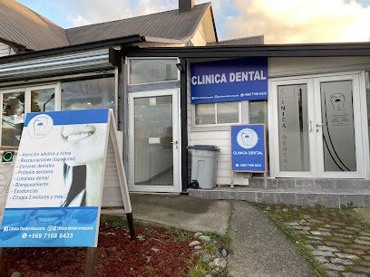
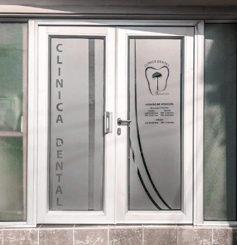
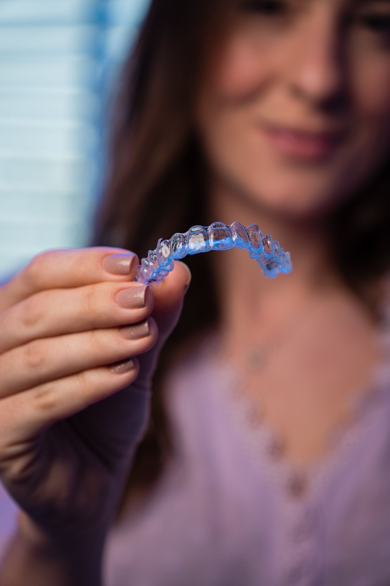
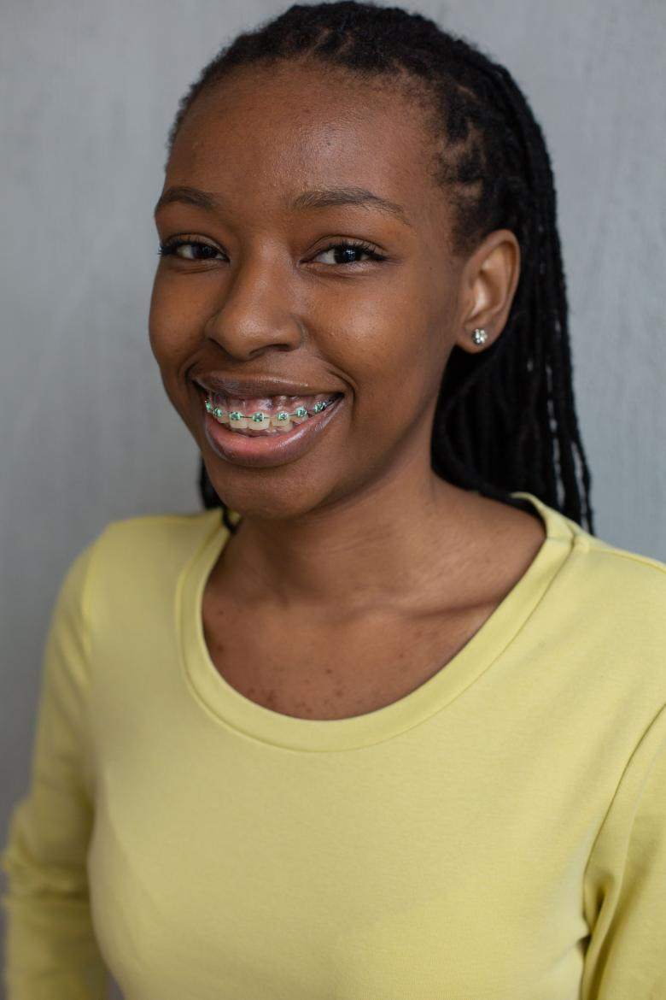

01
Se mira lo que se movió
Se compara con el control anterior. Si un diente no acompañó, el plan cambia ahí mismo: por eso el control no se puede saltar sin costo.
Propuesta de sitio web — preparada para Clínica Dental Araucaria por CristalWeb
5,0 con 46 reseñas, y la pregunta más cara de la adolescencia sin respuesta pública en ninguna parte: cuánto dura de verdad un tratamiento de frenillos. Esta página la contesta con rango honesto y cuenta lo que nadie cuenta — que después viene la contención.
Ortodoncia · Villarrica
Es la pregunta que hace el apoderado antes que el precio, y la que más se contesta con un «depende» que no ayuda a nadie. Depende, sí — pero el rango se puede decir, los controles se pueden contar y lo que viene después también.
De punta a punta
Un tratamiento de ortodoncia no es una compra: es una relación de dos años con una clínica. Contarlo entero antes de empezar —incluida la parte aburrida del final— es lo que separa a la clínica en la que se confía de la que sólo cotiza.
Mes 0
Radiografías, fotos y modelos. De ahí sale el plan y, con el plan, el plazo estimado — que es una estimación de verdad y no un número de folleto.
Sin esto, cualquier duración que alguien prometa es inventada.
Mes 1
Se pegan los brackets y se pone el primer alambre, que es el más fino y el más flexible de todos. Los primeros días molesta al morder y se come blando: eso pasa solo.
La liga de color se elige acá, y se cambia en cada control.
Meses 2 a 12
La parte larga. Cada control cambia el alambre por uno un poco más grueso y menos flexible, y así el diente se va acomodando de a poco. Es lento porque el hueso tiene que acompañar: apurarlo no es una opción técnica, es un daño.
Acá es donde se nota si el paciente llegó a sus controles.
Mes 12 a 30
Los últimos milímetros son los que más se demoran y los que se ven. Cuando el resultado está, se retiran los brackets y se limpia el esmalte.
El rango honesto es de 12 a 30 meses y depende del caso: no es lo mismo alinear un poco que corregir una mordida.
Después
Esto es lo que casi nadie cuenta antes de empezar, y es la razón por la que existe esta sección: después de los frenillos viene la placa. Los dientes tienden a volver a donde estaban, y la contención —una placa removible, un alambre fijo por detrás, o las dos— es lo que sostiene el resultado.
Se usa por años, no por semanas. Quien no lo dice al principio, lo tiene que explicar el día del retiro, y ahí ya suena a letra chica. falta: qué contención usan ustedes y por cuánto tiempo
Ninguna clínica de la zona tiene esto escrito. Y es, palabra por palabra, lo que el apoderado pregunta en la primera consulta mientras mira el presupuesto.
Lo que nadie cuenta del final
Terminado el tratamiento viene la contención, y esa etapa también tiene reglas: cuántas horas al día, por cuánto tiempo, qué pasa si se deja de usar. Es la parte que decide si los dientes se quedan donde los pusieron o si en dos años vuelven a moverse — y casi nadie la explica antes de empezar.
Quince minutos, una vez al mes
Desde afuera parece que sólo cambian una gomita. Escrito, se entiende que en esos quince minutos pasa el tratamiento entero — y el apoderado deja de preguntarse por qué se paga todos los meses.
01
Se compara con el control anterior. Si un diente no acompañó, el plan cambia ahí mismo: por eso el control no se puede saltar sin costo.
02
Alambre más grueso, un doblez, un resorte, una goma que tira en una dirección. Es el ajuste que produce el movimiento del mes siguiente.
03
Encías, higiene y si algún bracket se soltó. Con aparatos, la limpieza cuesta más y es cuando más fácil aparece una caries.
04
La parte que el paciente espera: el color nuevo del mes. Dura quince segundos y es, para muchos adolescentes, la razón por la que llegan contentos al control.
El tratamiento no se detiene: se alarga. El alambre sigue trabajando con la fuerza del mes pasado, que ya no es la que corresponde, y el mes siguiente hay que recuperar lo perdido. Dos o tres controles saltados a lo largo del año se traducen en meses extra al final — y ésa es la razón honesta por la que dos tratamientos iguales duran distinto.
falta: cómo manejan ustedes las inasistencias y con cuánta anticipación prefieren que se avise
Todo lo escrito acá es información general sobre cómo funciona un tratamiento de ortodoncia: no es un diagnóstico, no es un presupuesto y no promete ningún plazo para ningún paciente. El rango de 12 a 30 meses es el que se usa para hablar del tema en general; el plazo de una persona sale de su evaluación. Este texto lo escribió quien hizo el sitio y lo revisa y lo firma la clínica antes de publicarse.
«¿Cuánto dura de verdad?»
Se puede decir un rango. «Depende» no ayuda a nadie
Para evaluación u hora
Es el número publicado en su ficha de Google.
Cómo se ve al llegar


falta: la dirección exacta, y fotos propias en mejor resolución — éstas son las de su ficha de Google

Estas seis ya aparecen más arriba en la página. Vuelven acá en otro tamaño porque una sola pasada de imágenes deja el scroll vacío, y porque de cerca se ven cosas que en grande se pierden. La procedencia de cada una está en imagenes/FUENTES.txt.

El 5,0 con 46 reseñas de su ficha de Google y el teléfono 9 7108 6433. No tienen sitio propio: sólo redes.
Las cinco etapas, los cuatro puntos del control y el rango de 12 a 30 meses. Describen cómo funciona la ortodoncia, no cómo la hacen ustedes, y van marcados y sin firma.
Dos respuestas: qué contención usan y por cuánto tiempo, y cómo manejan las inasistencias. Con eso, la etapa de la contención deja de ser general y pasa a ser el argumento más fuerte de la página.